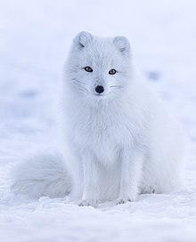

Description of the Arctic Fox
Appearance
The Arctic fox, also known as the white fox, polar fox, or snow fox, is a small fox that is best known for its thick, warm fur that is also used as camouflage.  It has a large and very fluffy tail. The Arctic fox is the only canid whose foot pads are covered in fur. The fur of the Arctic fox provides the best insulation of any mammal. The fox has a low surface area to volume ratio, as evidenced by its generally compact body shape, short muzzle and legs, and short, thick ears. Since less of its surface area is exposed to the Arctic cold, less heat escapes from its body.
There are two genetically distinct coat color morphs: white and blue. The white morph has seasonal camouflage, white in winter and brown along the back with light grey around the abdomen in summer.  The blue morph is often a dark blue, brown, or grey color year-round. Although the blue allele is dominant over the white allele, 99% of the Arctic fox population is the white morph. Two similar mutations to MC1R cause the blue color and the lack of seasonal color change.
The blue morph is often a dark blue, brown, or grey color year-round. Although the blue allele is dominant over the white allele, 99% of the Arctic fox population is the white morph. Two similar mutations to MC1R cause the blue color and the lack of seasonal color change.
Habitat
The Arctic fox has a circumpolar distribution and occurs in Arctic tundra habitats in northern Europe, northern Asia, and North America.  Its range includes Greenland, Iceland, Fennoscandia, Svalbard, Jan Mayen (where it was hunted to extinction) and other islands in the Barents Sea, northern Russia, islands in the Bering Sea, Alaska, and Canada as far south as Hudson Bay. In the late 19th century, it was introduced into the Aleutian Islands southwest of Alaska. However, the population on the Aleutian Islands is currently being eradicated in conservation efforts to preserve the local bird population. It mostly inhabits tundra and pack ice, but is also present in Canadian boreal forests.
Its range includes Greenland, Iceland, Fennoscandia, Svalbard, Jan Mayen (where it was hunted to extinction) and other islands in the Barents Sea, northern Russia, islands in the Bering Sea, Alaska, and Canada as far south as Hudson Bay. In the late 19th century, it was introduced into the Aleutian Islands southwest of Alaska. However, the population on the Aleutian Islands is currently being eradicated in conservation efforts to preserve the local bird population. It mostly inhabits tundra and pack ice, but is also present in Canadian boreal forests.
The Arctic fox is the only land mammal native to Iceland. It came to the isolated North Atlantic island at the end of the last ice age, walking over the frozen sea. The Arctic Fox Center in Súðavík contains an exhibition on the Arctic fox and conducts studies on the influence of tourism on the population. Its range during the last ice age was much more extensive than it is now, and fossil remains of the Arctic fox have been found over much of northern Europe and Siberia.

The color of the fox's coat also determines where they are most likely to be found. The white morph mainly lives inland and blends in with the snowy tundra, while the blue morph occupies the coasts because its dark color blends in with the cliffs and rocks
Behaviour
Arctic foxes must endure a temperature difference of up to 90–100 °C between the external environment and their internal core temperature. To prevent heat loss, the Arctic fox curls up tightly tucking its legs and head under its body and behind its furry tail.
 This position gives the fox the smallest surface area to volume ratio and protects the least insulated areas. Arctic foxes also stay warm by getting out of the wind and residing in their dens. Although the Arctic foxes are active year-round and do not hibernate, they attempt to preserve fat by reducing their locomotor activity. They build up their fat reserves in the autumn, sometimes increasing their body weight by more than 50%. This provides greater insulation during the winter and a source of energy when food is scarce.
This position gives the fox the smallest surface area to volume ratio and protects the least insulated areas. Arctic foxes also stay warm by getting out of the wind and residing in their dens. Although the Arctic foxes are active year-round and do not hibernate, they attempt to preserve fat by reducing their locomotor activity. They build up their fat reserves in the autumn, sometimes increasing their body weight by more than 50%. This provides greater insulation during the winter and a source of energy when food is scarce.
In the spring, the Arctic fox's attention switches to reproduction and a home for their potential offspring. They live in large dens in frost-free, slightly raised ground. These are complex systems of tunnels covering as much as 1,000 m2. These dens may be in existence for many decades and are used by many generations of foxes.